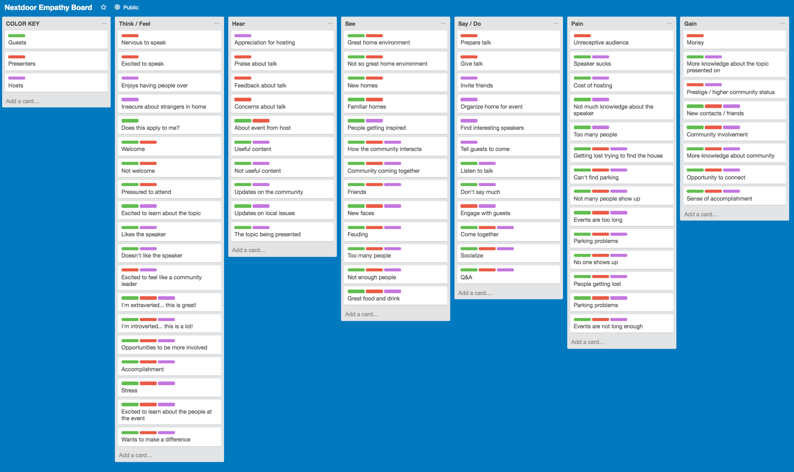
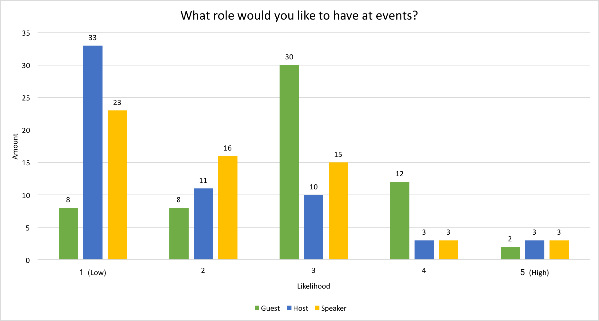
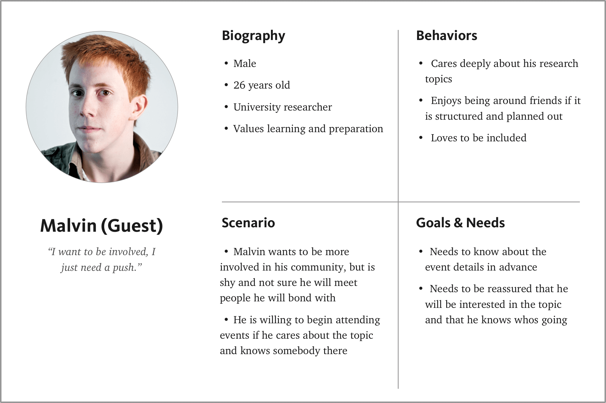
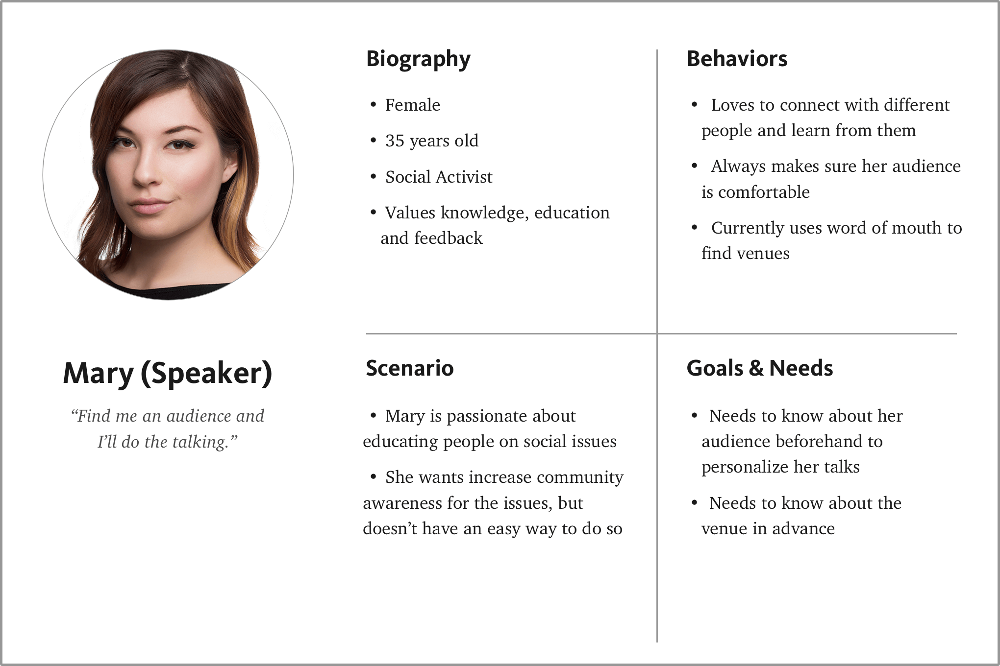
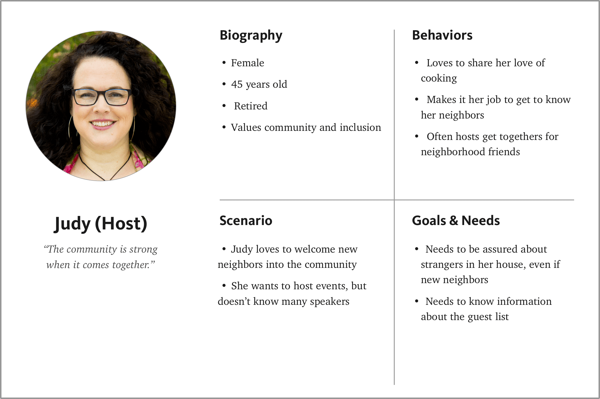
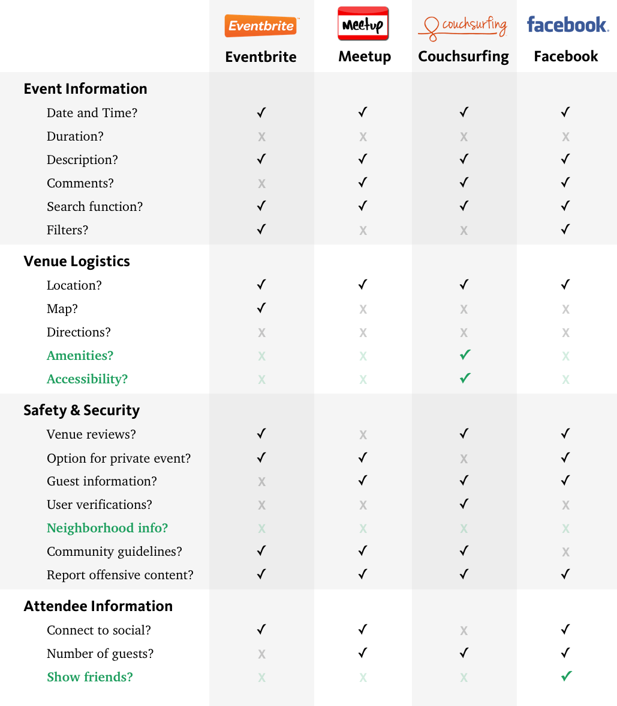
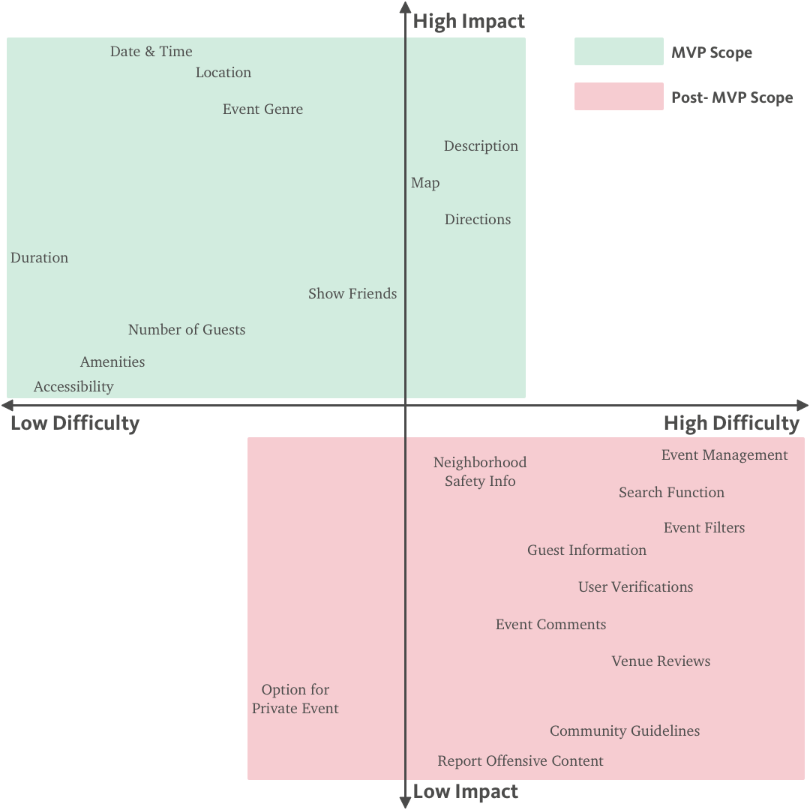
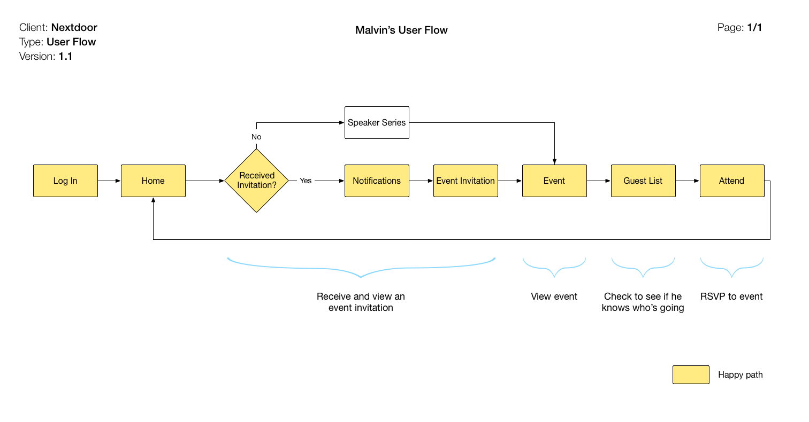
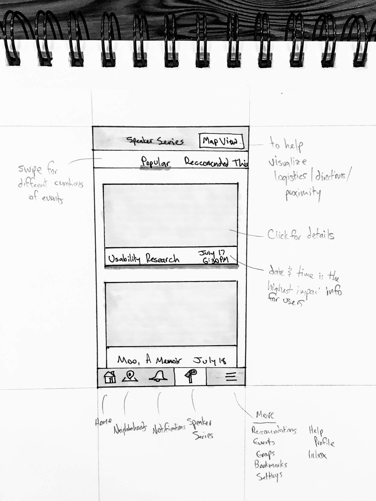

Nextdoor is a private social network that seeks to build stronger and safer neighborhood communities. Nextdoor currently has functionality for events, but has received interest from local speakers to give talks at community members’ homes.
Challenge: Community members want to connect with their neighbors and people with similar interests, but don’t have a safe or easy way of doing so. Nextdoor has a list of speakers that want to give talks, but doesn’t have a direct way to bring guests and speakers together.
Solution: Create a safe and inviting platform for community members to host and attend community events at peoples’ homes featuring local speakers.
Platform: iOS
Time: 2 weeks
Team: 4 members
Before we did user research, we talked with Nextdoor to find out more about its perception of its core users. We put our findings into an empathy map to visualize trends and begin to form testable hypotheses.
(Nextdoor assumed that its core users were hosts, speakers and guests.) From the empathy map, we came up with these main hypotheses:
With our hypotheses formed, we reached out to current and potential Nextdoor users to get the users’ points of view.
We sent out online surveys to our current Nextdoor networks as well as other contacts we thought might have insights, and went out to various community centers in San Francisco to get in-field research.
Here are some of the main questions we asked:
We ended up receiving 60 responses on the survey and talked to 8 people in-person. The survey results gave us great quantitative information while the in-person interviews gave us more context and qualitative depth into users’ core pain points and needs.
The results showed that while only 50% of respondents were actively involved in their community, 83% were interested in attending events to get more involved. This validates the demand for more community involvement through events.
57% of users reported accessing Nextdoor through their mobile app (41% iOS, 16% Android).
While people were most interested in being guests, which was our initial hypothesis, we were surprised that so many people were willing to be speakers or hosts. This helped solidify them as distinct user types to design for.
From the research, I worked with my team to develop three personas, which personify the generalized users, so that we can relate to and empathize towards throughout the design process.
  Judy, Malvin and Mary have five common needs:
For the scope of the project, we identified Malvin, the guest, as the primary persona since the majority of users said they would prefer to be guests. We also made the assumption that hosts and speakers would be willing to be guests as well, but guests wouldn’t necessarily want to be hosts or speakers.
Speaker Series’ main competition is event management sites where users can participate in posted events. Based on Judy, Malvin and Mary’s key needs, I did a competitive analysis to see how the competition meets their needs.
Speaker Series has the opportunity to improve on the competition by:
With the large amount of features and functionality my team and I brainstormed, it was hard to tell the tradeoffs of positively impacting the users the most vs. being cost-efficient to design and engineer.
We felt that the best way to tackle this problem would be through a feature prioritization matrix, which would give us a roadmap to move forward.
By breaking down the features into MVP and Post-MVP scope, we were able to dive deeper into the most impactful features for the users given our limited timeline.
Given the scope of the project, we decided to focus on designing a solution for Malvin, the guest, our primary user.
I created user flows for Malvin to see how he would optimally view and attend speaking engagements, and to see how the new platform would fit within the existing site.
His happy path occurs when he is invited to attend a speaking engagement. This is under two assumptions:
The majority of users reported using the Nextdoor mobile app on iOS so we designed the solution for this platform.
I started with pen and paper sketches to rapidly ideate different solutions without spending a lot of time on one solution that might not be what the users really need.
This agile approach let me do usability testing early on to more fully address the users’ pain points and needs.
Users had some feedback on the main page:
I like how easy it is to scroll through the top categories to find events I’m interested in.
The large images make me want to find out more details.
The date and time is great information to know, but I also wonder how many people are going.
Though users found the top categories useful since it met a core need of event discovery, I realized that this feature was not in the scope of the MVP. Because of this, I took it out in the next iteration to re-focus on the MVP scope.
Bringing the wireframes into Sketch allowed users to get a much accurate and detailed representation of how they would actually use the platform.
To get a good sense of how users would use the platform on an interaction level, I brought the wireframes into InVision.
I chose to create a prototype at this level of fidelity to really hone in on micro-interaction and content details that hadn’t been addressed in previous rounds of usability testing.
The next steps for the Nextdoor Speaker Series platform include:
Overall, the Speaker Series platform helps users discover events they are interested in and that will bring them together as a community. This builds on Nextdoor’s mission of building stronger and safer neighborhoods.